În stînga este slide-ul din curs, în dreapta aceeași figură sau același tabel, calculat în browser din aceleași date. Butonul ▶ modifică parametrul pas cu pas; casetele „Exemplu rezolvat” refac calculul cu cifrele capitolului.
De la o serie la mai multe · Modelul VAR(p) · Staționaritate și forma companion · Estimare și alegerea numărului de laguri · Diagnosticarea reziduurilor · Cauzalitatea Granger · Funcții de răspuns la impuls · Descompunerea varianței erorii de prognoză · Prognoza cu un VAR · VAR-uri structurale și un studiu de caz de referință
De la o serie la mai multe
România: patru serii macroeconomice care evoluează împreună
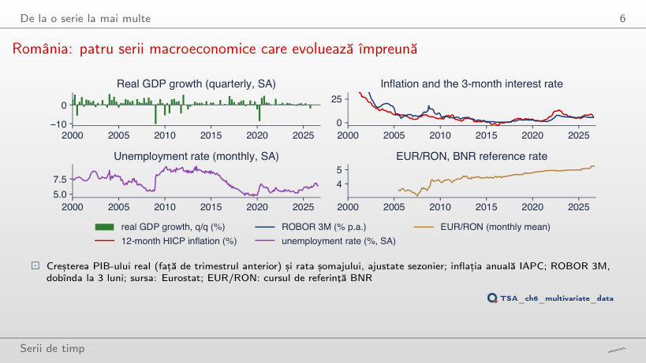
Răspuns
0,89, față de 0,66 pe 2005–2026. După 2015 cele două serii au urcat și au coborît împreună (inflația a atins 13,6% în noiembrie 2022, ROBOR 3M 8,0% în octombrie 2022), iar episodul din 2008, cînd ROBOR a ajuns la 18,2% în criza de lichiditate, a ieșit din fereastră. Corelația dintre nivelurile a două serii persistente depinde mult de eșantion și nu spune care dintre ele o precedă pe cealaltă.
Corelații încrucișate: piețe și date macroeconomice românești
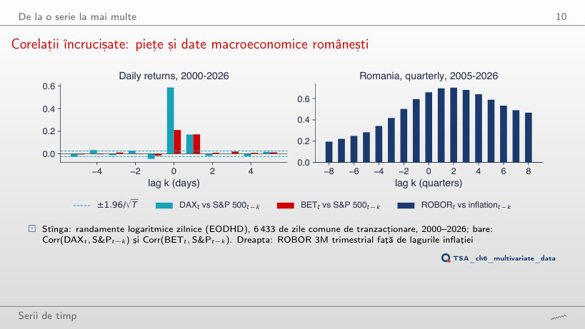
Răspuns
Nu: −0,058, în afara benzii ±0,037; pe tot eșantionul este −0,046, tot în afara benzii ±0,024. Precedența merge în principal de la New York spre Europa (0,135 la k = 1 din 2015, 0,171 pe tot eșantionul), dar nu doar într-un sens: și DAX de ieri are o corelație mică, negativă, cu S&P 500 de azi. Pentru BET valoarea la k = −1 (−0,005 din 2015, −0,017 pe tot eșantionul) rămîne în bandă.
Modelul VAR(p)
Exemplu rezolvat: un VAR(1)
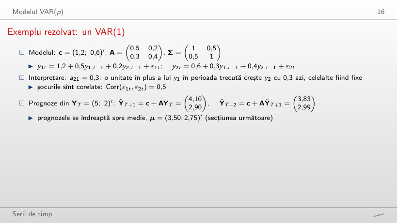
Exemplu rezolvat
Răspuns
Nu. tr(A) = 0,9 și det(A) = 0,5·0,4 − 0,5·0,8 = −0,20, deci λ = (0,9 ± √1,61)/2: λ₁ = 1,084 și λ₂ = −0,184. Cel mai mare modul depășește 1, iar prognozele cresc fără limită (ŷ₁ = 16,48 la h = 8). Stabilitatea depinde de valorile proprii, nu de mărimea fiecărui coeficient: efectele încrucișate a₁₂a₂₁ = 0,40 se adaugă persistenței proprii. Cu a₁₁ = 0,5 și a₂₂ = 0,4, VAR-ul este stabil doar dacă a₁₂a₂₁ < 0,30.
Exemplul rezolvat, simulat
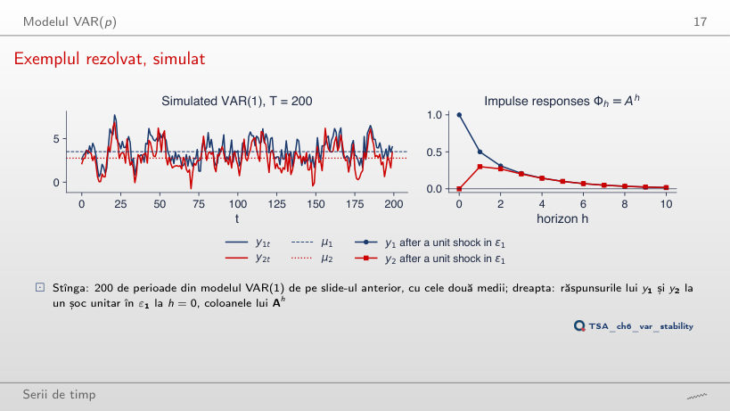
Exemplu rezolvat
Răspuns
0,187, nu 0,8⁵ = 0,328. Φ₁₁(h) = 0,571·0,8ʰ + 0,429·0,1ʰ: componenta dominantă intră în e₁ cu ponderea 0,571, iar raportul Φ₁₁(h)/Φ₁₁(h−1) se apropie de 0,8 abia după cîteva perioade. La fel în exemplul din curs: Φ₁₁(5) = 0,6·0,7⁵ + 0,4·0,2⁵ = 0,101, deci după 5 perioade rămîne circa 0,10 din efectul inițial; 0,7⁵ ≈ 0,17 este factorul cu care scade componenta dominantă, nu răspunsul.
Staționaritate și forma companion
Valorile proprii a trei VAR-uri estimate
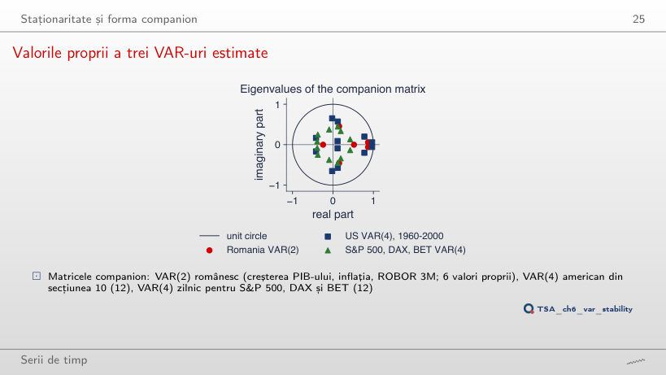
Răspuns
0,913, din 15 valori proprii (matricea companion este 15 × 15), față de 0,869 din 6 pentru p = 2; un șoc scade la jumătate după 7,7 trimestre, față de 5,0. Lagurile suplimentare adaugă valori proprii, iar unele cu modul mare (0,874, 0,836) apar în perechi complexe, adică oscilații pe care VAR(2) nu le are. Cu 48 de coeficienți pe circa 80 de trimestre, aceste oscilații pot fi zgomot de estimare.
Estimare și alegerea numărului de laguri
VAR-ul românesc: alegerea lui p
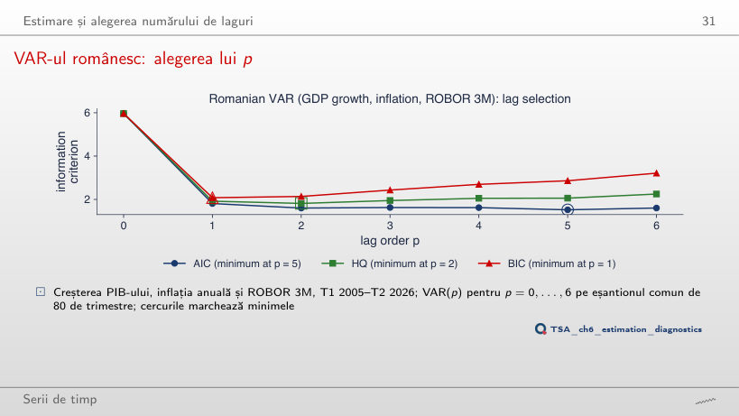
Exemplu rezolvat
Răspuns
p = 5, ca AIC; BIC alege tot p = 1. Eșantionul comun are doar T = 54 de trimestre, iar ln det Σ̃(5) = −0,446 este mult mai mic decît pentru p = 2 (0,970), pentru că un VAR(5) are 48 de coeficienți pe 54 de observații și aproape reproduce datele. Penalizarea HQ, 2 ln ln T = 2,767 pe unitatea lui pK²/T, nu compensează. Pe eșantioane scurte criteriile pot alege ordine mari: trebuie verificat cîte grade de libertate rămîn.
VAR(2) românesc estimat
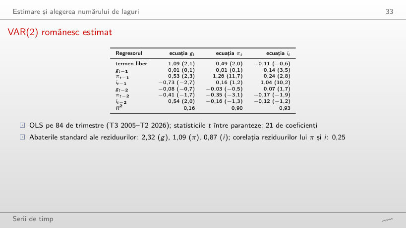
Răspuns
Da: 0,21 cu t = 3,7, față de 0,14 cu t = 3,5 pe tot eșantionul; în plus devine semnificativ și gt−2 (0,14, t = 2,3). Fără 2020–2026, R² al ecuației PIB crește de la 0,16 la 0,30, pentru că trimestrul pandemiei, cu reziduul de −9,1, nu mai este în eșantion. Legătura dintre creșterea PIB și dobînda din trimestrul următor nu vine din anii pandemiei.
Diagnosticarea reziduurilor
Reziduurile VAR(2) românesc
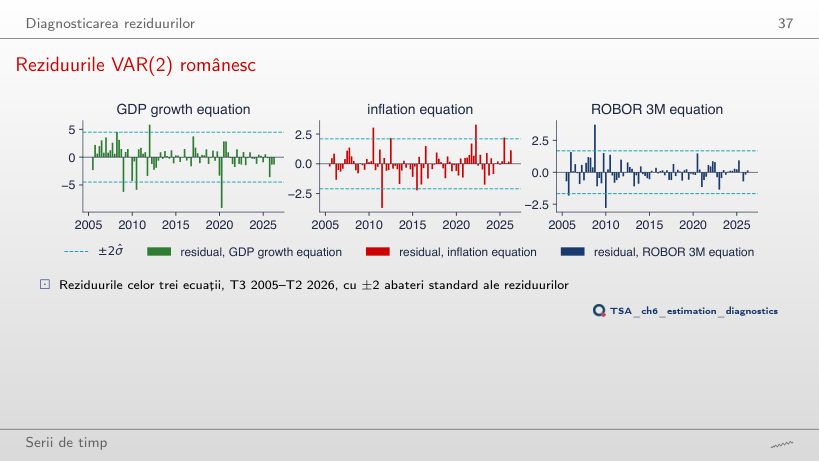
Exemplu rezolvat
Răspuns
Da: statistica scade de la 191 la 144 (χ²(6), p < 0,001). Dummy-urile anulează reziduurile celor două trimestre, dar rămîn alte valori extreme: ROBOR +3,5 în T4 2008, inflația −3,7 în T3 2011, PIB −5,9 în T3 2010; kurtosisul ROBOR rămîne 7,9. Testul portmanteau iese chiar mai prost (Q₈ = 88,2, p = 0,002): eliminarea a două observații nu face reziduurile un zgomot alb Normal.
Cauzalitatea Granger
Exemplu rezolvat: este creșterea PIB-ului o cauză Granger pentru ROBOR?
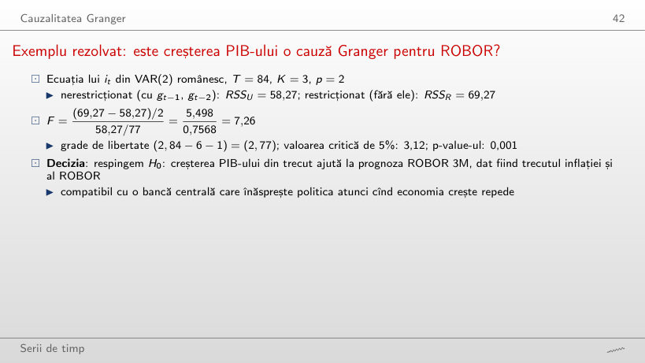
Exemplu rezolvat
Răspuns
F = 8,50 cu (4, 69) grade de libertate, p < 0,001; valoarea critică de 5% scade la 2,50. Se testează acum 4 restricții: RSSR − RSSU = 64,08 − 42,93 = 21,15 se împarte la 4, iar RSSU la T − Kp − 1 = 82 − 12 − 1 = 69. Concluzia nu depinde de p: cu p = 1, F = 10,63 (p = 0,002).
Cauzalitatea Granger în VAR(2) românesc
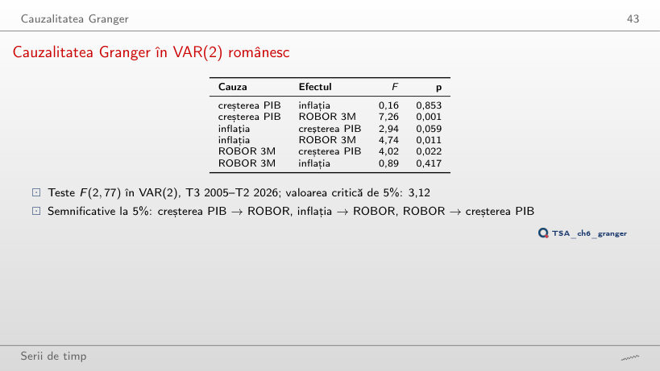
Răspuns
Nu: F = 2,46, p = 0,096, față de 4,74 (p = 0,011) pe tot eșantionul. În schimb, inflația → creșterea PIB devine semnificativă (F = 6,27, p = 0,004). Fără anii 2021–2023, cînd inflația a urcat la 13,6% și ROBOR a crescut odată cu ea, legătura de la inflație la ROBOR nu se mai separă de zgomot pe 58 de trimestre. Rezultatele Granger depind de eșantion, nu doar de setul de variabile.
Piețe: New York-ul precedă Frankfurtul și Bucureștiul
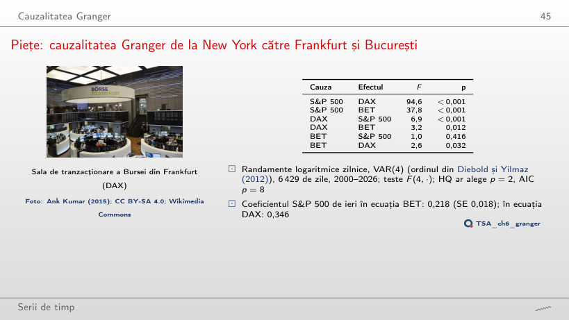
Răspuns
Nu: F = 1,1, p = 0,369 (pe 2000–2026: F = 3,2, p = 0,012). S&P 500 → BET rămîne foarte puternică (F = 22,5), iar coeficientul S&P 500 de ieri în ecuația BET scade de la 0,218 la 0,183. Cu 4 033 de zile testul are multă putere, deci p = 0,369 arată că efectul DAX → BET, dată fiind S&P 500, este mic după 2010; nu arată că este exact zero.
Cauzalitate Granger falsă din cauza unei variabile omise
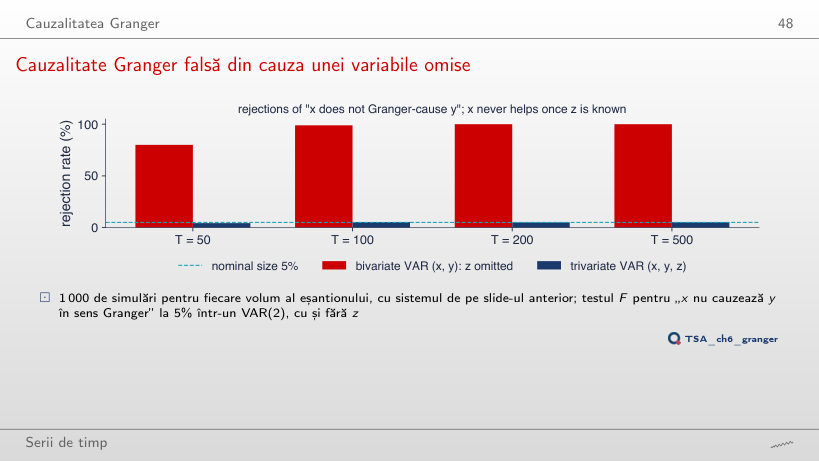
Răspuns
5,6%, apropiată de nivelul nominal de 5% (între 4,5% și 5,6% la toate volumele), față de 100% cu efectul 0,8 și 100% cu 0,4. x pare o cauză a lui y doar pentru că xt−1 este o măsură zgomotoasă a lui zt−2, care îl determină pe yt. Contează și ordinul: cu p = 1, chiar VAR-ul cu z respinge în 76%–100% din cazuri, pentru că un singur lag al lui z nu conține zt−2, iar xt−1 îl înlocuiește.
Funcții de răspuns la impuls
Exemplu rezolvat: răspunsuri ortogonalizate
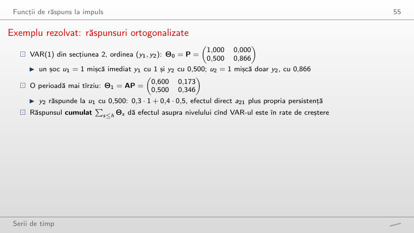
Exemplu rezolvat
Răspuns
0 la impact și 0,260 după o perioadă (0,3·0,866 + 0,4·0), față de 0,500 și 0,500 în ordinea (y₁, y₂). Cu y₂ primul, întreaga corelație de 0,5 este atribuită șocului u₂, care îl mișcă pe y₁ cu 0,500 la impact; u₁ ajunge la y₂ doar prin a₂₁, cu o perioadă întîrziere. Același VAR și aceleași date dau răspunsuri diferite: ordinea este o ipoteză.
Răspunsurile la impuls ale VAR(2) românesc
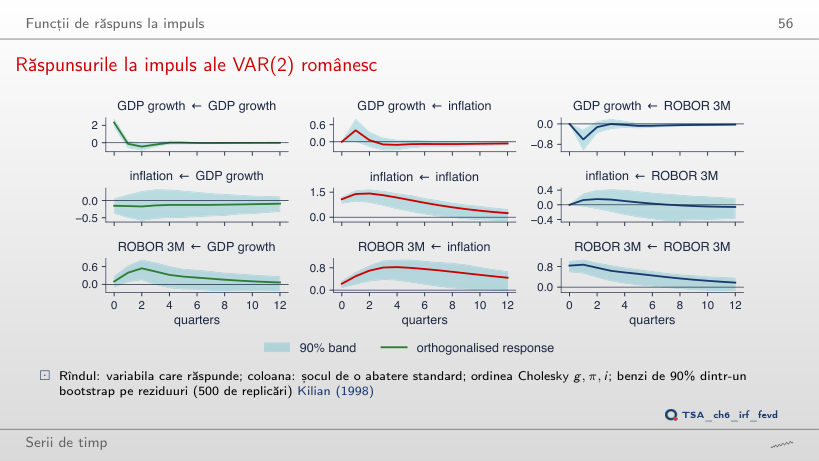
Exemplu rezolvat
Răspuns
0 la impact, prin construcție, și 0,64 pp după 4 trimestre, față de 0,23 și 0,82 pp în ordinea din curs; banda exclude zero la 9 orizonturi din 13, față de 11. Cu ROBOR primul, partea comună a celor două șocuri (corelația reziduurilor 0,25) este atribuită ROBOR. Concluzia calitativă rămîne: ROBOR crește după un șoc al inflației și rămîne mai sus ani la rînd (0,38 pp după 12 trimestre).
Efectul ordinii asupra răspunsurilor
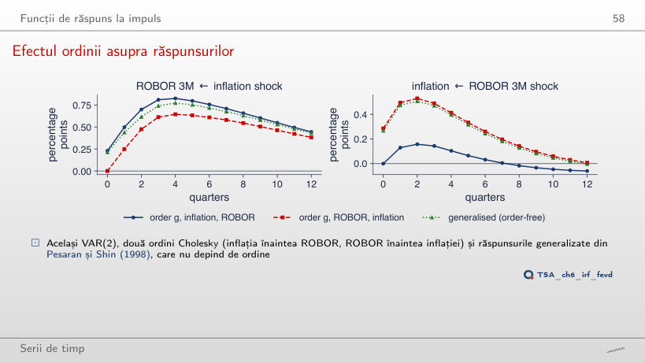
Exemplu rezolvat
Răspuns
Nu: maximul răspunsului este 0,00 pp, la impact (zero prin ordine), iar apoi răspunsul este negativ; cu p = 2 urca la 0,16 pp. Cu ROBOR primul, impactul este 0,29 pp și în VAR(1), pentru că ordinea atribuie ROBOR partea comună a șocurilor. „Enigma” depinde aici și de ordine, și de numărul de laguri: un rezultat care se schimbă cu p și cu ordinea este fragil.
Piețe: răspunsuri la un șoc S&P 500
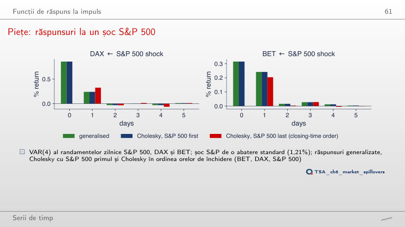
Exemplu rezolvat
Răspuns
0,11%, față de 0,24% pe 2000–2026; răspunsul din aceeași zi rămîne 0,32%. Pentru DAX răspunsul scade de la 0,85% la 0,68% în aceeași zi și de la 0,24% la 0,16% a doua zi. Partea din ziua următoare, care vine din orele de închidere diferite, este după 2015 de circa două ori mai mică.
Descompunerea varianței erorii de prognoză
Descompunerea varianței erorii de prognoză
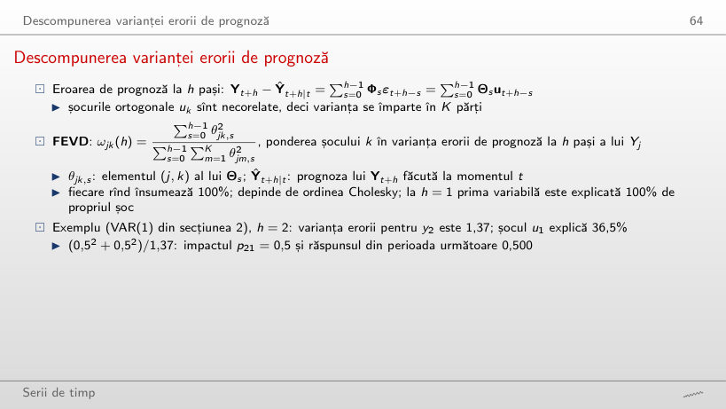
Exemplu rezolvat
Răspuns
10,6%, față de 45,8% în ordinea (y₁, y₂); la un pas ponderea este 0%. Cu y₂ primul, u₁ ajunge la y₂ doar prin a₂₁ = 0,3, cu o perioadă întîrziere (0,260 la h = 1), iar suma pătratelor acestor răspunsuri este 0,182 din 1,724. Varianța erorii nu se schimbă (1,72 la h = 10 în ambele ordini); se schimbă doar împărțirea ei între șocuri.
FEVD pentru VAR(2) românesc
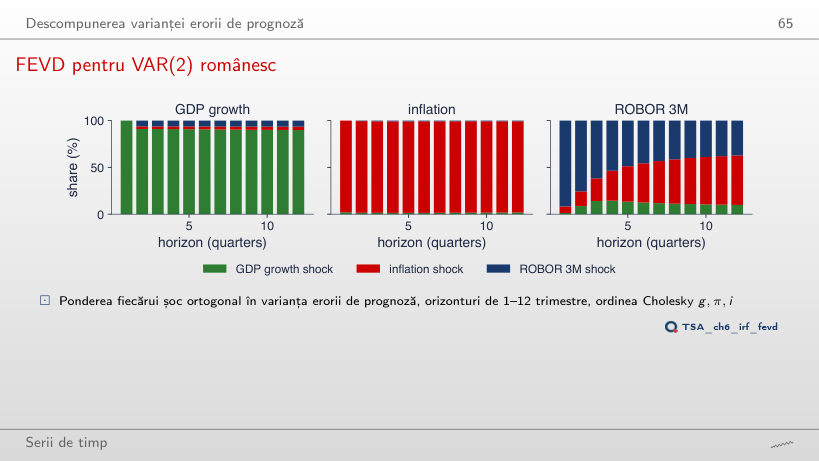
Exemplu rezolvat
Răspuns
27%, față de 53% în ordinea din curs; propriile șocuri ale ROBOR explică 63% în loc de 37%. La un trimestru ROBOR este explicat 100% de propriul șoc, prin construcție. Concluzia că pe termen lung dobînda este determinată mai ales de inflație se bazează deci pe ipoteza că ROBOR reacționează la inflație în același trimestru, nu invers.
Tabelul de spillover: S&P 500, DAX, BET
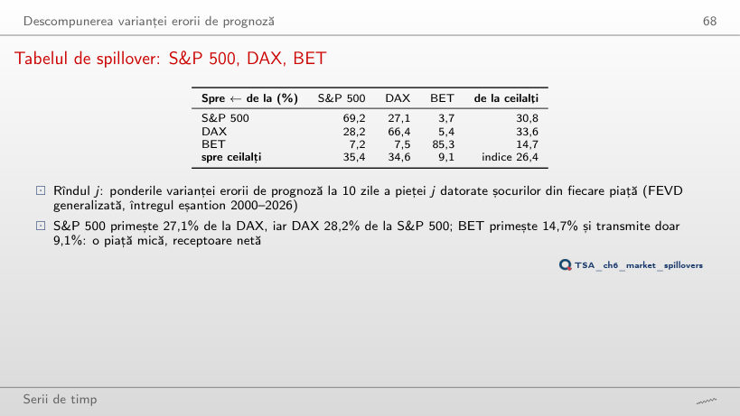
Exemplu rezolvat
Răspuns
49,0%, față de 14,7% pe 2000–2026; indicele urcă la 51,2% (26,4% pe tot eșantionul), iar BET transmite 45,3% în loc de 9,1%. În anul pandemiei piețele s-au mișcat împreună. Un singur an are doar 237 de zile pentru 39 de coeficienți ai VAR(4), deci tabelul unui an este mai zgomotos; în 2017, un an calm, indicele este 24,4%, iar BET primește 13,2%.
Indicele de spillover în timp
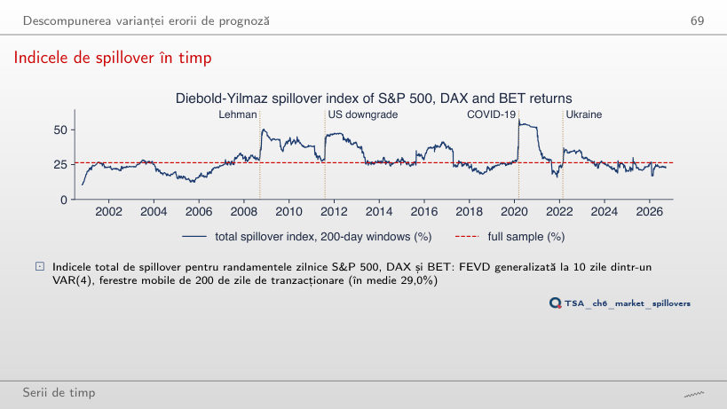
Răspuns
47,3%, pe 22 septembrie 2021, față de 57,5% pe 17 martie 2020 cu ferestre de 200 de zile. O fereastră mai lungă amestecă prăbușirea din martie 2020 cu mai multe zile calme, deci vîrful este mai mic și apare mai tîrziu; media rămîne aproape aceeași (29,1% față de 29,0%). Mărimea și data vîrfurilor depind de lungimea ferestrei: o parte din salturi este mecanică.
Prognoza cu un VAR
VAR(2) românesc: prognoze pe doi ani
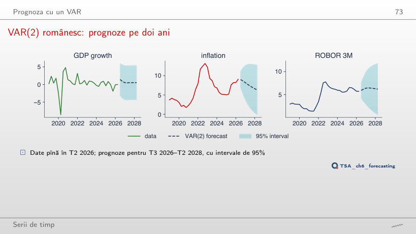
Exemplu rezolvat
Răspuns
Nu: 13,2% realizat, față de o prognoză de 2,4% și intervalul [−2,3; 7,1]. VAR-ul estimat pînă în 2020 nu conține șocurile prețurilor energiei din 2021–2022, iar intervalul presupune șocuri Normale cu varianța din trecut și ignoră incertitudinea parametrilor. Cu originea T4 2019, inflația din T4 2021 (6,4%) era încă în interval ([−2,0; 7,7]).
VAR față de metodele univariate de referință
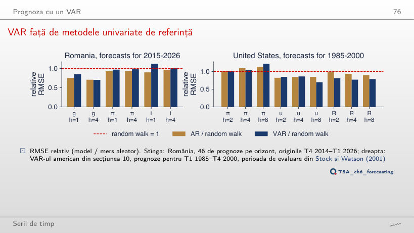
Răspuns
Nu la 5%: RMSE relativ 1,06 pentru VAR și 0,76 pentru AR, dar DM = 1,74, p = 0,082, pe doar 22 de prognoze. Diferența rămîne în favoarea AR, iar VAR-ul este acum mai puțin precis chiar decît mersul aleator; cu jumătate din prognoze, testul nu o mai separă de zgomot la 5%.
VAR-uri structurale și un studiu de caz de referință
Cele trei serii americane
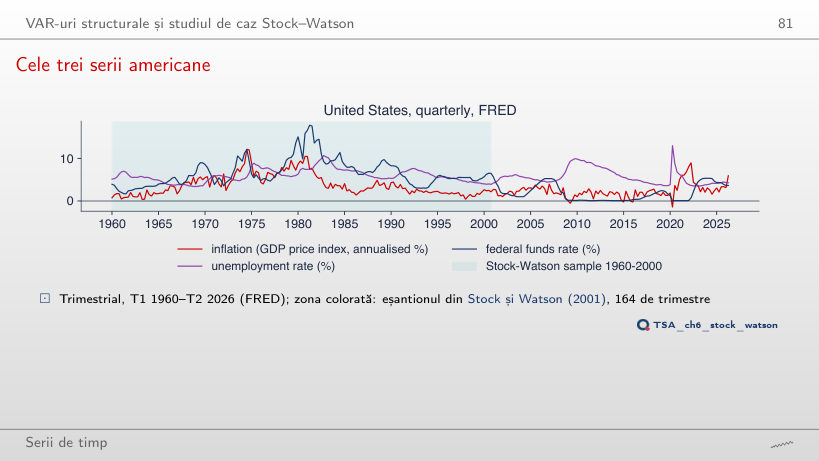
Răspuns
4,78%, față de 6,59% în 1960–2000; corelația șomaj–dobîndă scade de la 0,29 la 0,05. După 2008 și în 2020 dobînda a stat aproape de zero (minimul 0,06%), iar inflația a coborît pînă la −1,43%. Eșantionul extins conține un regim pe care VAR-ul din 1960–2000 nu l-a văzut.
VAR-ul Stock–Watson: răspunsuri la impuls
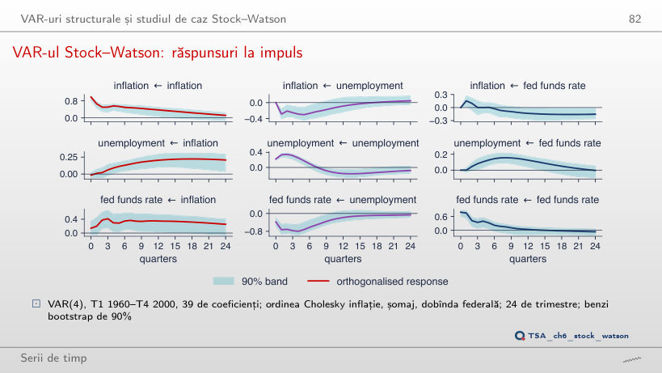
Răspuns
Negativ: −0,13 pp, față de +0,05 pp în 1960–2000 (unde maximul este 0,16 pp după 8 trimestre). Șocul monetar explică acum doar 4% din varianța șomajului la 12 trimestre, față de 19%. Dobînzile aproape zero de după 2008 și pandemia schimbă sistemul, iar un VAR cu parametri constanți pe 1960–2026 amestecă regimuri diferite: semnul greșit semnalează instabilitatea modelului.
Date trimestriale pentru România, T1 2005 – T2 2026: creșterea PIB-ului real (Eurostat, seria din curs), inflația anuală IAPC și ROBOR 3M (medii trimestriale). Randamente logaritmice zilnice în %, 6.433 de zile comune, 6 ianuarie 2000 – 18 septembrie 2026: S&P 500, DAX și BET (EODHD). Statele Unite: FRED (GDPCTPI, UNRATE, FEDFUNDS), T1 1960 – T2 2026. VAR-urile, testele, răspunsurile la impuls, FEVD și indicele de spillover se reestimează în browser prin OLS; stările inițiale sînt cele din curs. Benzile bootstrap ale răspunsurilor românești folosesc extragerile seminței capitolului (500 de replicări); simularea VAR(1) folosește extragerile Normale ale aceleiași semințe. Variantele care nu apar în curs (alt ordin p, altă ordine Cholesky, alt eșantion, alte ferestre, alte efecte în simulare) sînt rulări suplimentare ale codului capitolului, cu aceleași date și aceeași sămînță; indicele de spillover cu alte ferestre sau alt orizont se calculează din 5 în 5 zile.